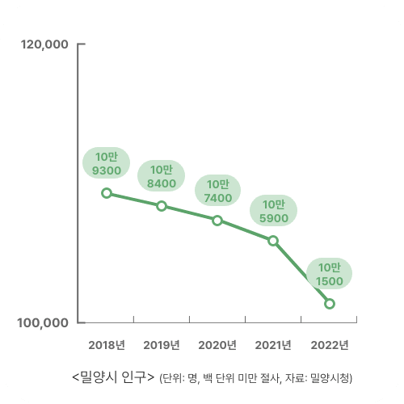

공공디자인으로 행복한 공간 만들기
Scroll Down
Swipe Down
모든 도시는 이런 단계를 거칩니다.
지방
도시는
어떨까요.
우리나라는
수도권을
중심으로
발전해온
탓에
지방
도시의
인구가
늘지
않아요.
늘기는커녕
도시
소멸을
염려하는
처지죠.
인구가
늘지 않는
상황에서
도시
외곽에
신규
주거단지나
산업단지가
개발됩니다.
이 신도심에는
상대적으로
젊은 층과
경제력이
있는 계층이
몰립니다.
반면,
옛 도심은
어떨까요.
옛 도심에
있던 기업과
공공기관은
이전하고,
상권은
쇠락합니다.
경제적
약자인
노년층이
주로
남게 되죠.
이를
옛(구) 도심
공동화라고
부릅니다.
옛 도심이
쇠락해지는
것을
해결하기
위해
도시를
재생하는
사업을
펼칩니다.
공공
디자인으로
도시를
재생하는
것은
어떤
모습일까요?
경상남도
밀양시의
이야기로,
함께
살펴보아요.
밀양시는
인구 10만
도시입니다.
여느 지방
소도시처럼,
인구가 매년
줄고 있어요.
밀양의 옛
도심은
내일동과
내이동
남쪽 지역이에요.
새로운
주거·산업
지역으로
개발된
신삼문동과
내이동
북쪽 지역
등으로
주민들이
빠져나갔죠.
이곳에 있던
밀양대학교는
2000년대 중반
통합·이전했고요.
이 때문에
이곳은
쇠락해갔어요.

밀양의 옛
도심은
내일동과
내이동
남쪽 지역이에요.
새로운
주거·산업
지역으로
개발된
신삼문동과
내이동
북쪽 지역
등으로
주민들이
빠져나갔죠.
이곳에 있던
밀양대학교는
2000년대 중반
통합·이전했고요.
이 때문에
이곳은
쇠락해갔어요.
그간 손을
놓고 있던
건 아니에요
옛 도심의
중심에
약 500m
길이의
생태하천
해천을
중심으로
2018년부터
도시
재생사업을
펼쳤어요
동가리(자투리를 일컫는 사투리)
신작로를
꾸미고,
김원봉
선생 등
지역
독립운동가를
테마로 한
의열기념관과
밀양아리랑
문화센터
등을
만들었죠
<도심사색, 해천>을 만든
이준욱 총감독은 말합니다.
“
지금까지
진행된
여러 개의
도시 재생사업을
하나의
브랜드로
통합할
필요가
있었어요.
<도심사색
해천>이라는
통합된
정체성
아래에,
해천 일대의
역사·문화·관광
자원이
조화를
이루도록요.
”
해천
일대에는
역사·문화
자원이
밀집해
있어요.
하지만
기존 안내판은
사람들에게
쉽게 읽히지
않았죠.
외국어
표기나
점자 안내도
부족했고요.
밀양시는
인구 10만
도시입니다.
여느 지방
소도시처럼,
인구가 매년
줄고 있어요.
안내판과
이정표,
전력을
공급받는
분전반에는
도심사색,
해천이라는
브랜드
아이덴티티를
만들어
넣었어요.
기존 해천
일대의
가로등은,
주변을
충분히
밝히지는
못했어요.
이를
보완하기
위해
곳곳에
조명을
추가로
달았어요.
밤길
보행자의
안전을
위해서요.
보행자
난간
아랫부분과
공연장
관람석
아랫부분에
조명을
설치했어요.
돌다리
밑에도
투광등을
넣었죠
이 조명들이
해천의
밤길을
더 운치
있게
만들어요.
해천 일대는
상업과 관광,
주거가
혼재한
장소예요
관광객과
주거민의
요구가
다를 수 있죠.
예를 들어,
주거민이
생활 쓰레기를
버리던
곳을 없앤다면
관광객이
보기엔
깨끗하지만,
주거민은
불편해지죠.
쓰레기
봉투를
버리던
곳에
해천 일대의
지도가
담긴 가림막을
설치했어요
대신, 가림막에
여닫이
문을 설치해
주거민이
문을 열고
쓰레기봉투를
버릴 수
있는
공간을
뒀어요.
관광객과
주거민이
모두
만족할만한
방법이에요.
횡단보도를
새로
설치하고,
주민들을
위한
쉼터도
만들었어요.
밀양의
관광·문화
정보를
제공하는,
랜드마크를
마련했어요.
'밀양여행문화센터
해천
상상루'가
관광객과
주거민의
구심점이
되도록요.
노은진 밀양시 주무관은 말해요.
“
영남루,
밀양읍성,
밀양아리랑시장
등 찾는
분들이
대부분
한 곳만
들렀다가
가세요.
바로 그
옆에 즐길
수 있는
자원들이
많은데도
그에 대한
정보가
제공되지
않았던
것이죠.
”
1층에는
해천을
찾은
관광객을
위한
공간이에요.
관광·여행
정보를
터치
스크린으로
보는
여행자
아카이브
월(Travel Archive Wall)과
함께
여행자
라운지를
마련했어요.
2층은
미디어
전시
체험관이에요.
밀양을
테마로
한 미디어
아트를
감상할
수 있죠.
아이를
데리고
나온
가족을
위해
빛 놀이터와
모션 샌드,
AR 포토
존을
준비했어요.
3층은
지역
예술가를
전시실과
공유
오피스로
활용할
계획이에요.
밀양 지역의 예술가인
하수영씨는 말해요.
“
의열체험관,
동가리
신작로
상상 해천루
등 해천
일대를 찾는
이들이 많아지고,
이를 통해
옛 도심인
해천을
중심으로
밀양의
문화·예술
콘텐츠가
융성해지길
기대해요
”